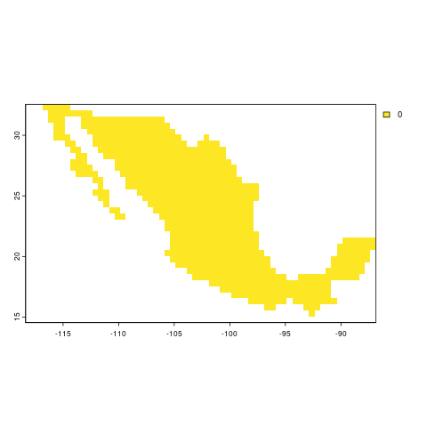
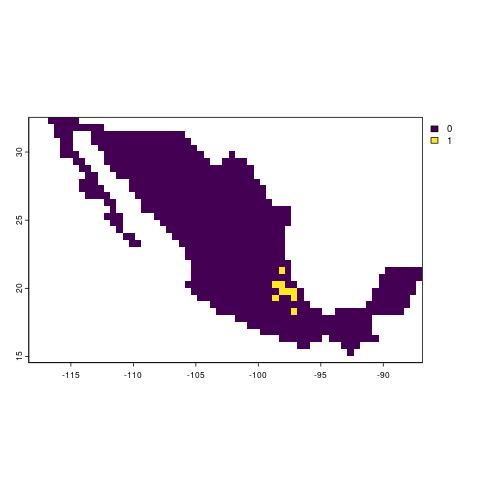

library(data.table)
library(here)
library(sf)
library(terra)
library(dplyr)
library(rnaturalearth)raster_stack_richness
Load geographic libraries (sf,terra,rnaturalearth) and data manipulation libraries (dplyr,data.table).
Load inputs
- Load complete and filtered geographic records from gbif and red de herbarios mexicanos.
- Load vector map of Mexico from rnaturalearth
We kept WGS84 projection for points and maps.
hgbif <- fread(here::here("data/in/hgbif_completo_iucn.csv"))
# Obtener el mapa de México con rnaturalearth
mexico_map <- ne_countries(scale = "large", returnclass = "sf", country = "Mexico")Split points by species and create a list of data frames. Then transform dataframes into sf objects.
# Split dataframe by species
species_list <- split(hgbif, hgbif$correctname)
# Convert species occurrence data into sf object
species_sf_list <- lapply(species_list, function(df) {
st_as_sf(df, coords = c("X", "Y"), crs = 4326)
})Generate presence/absence distribution maps
Based on the required inputs for (phyloraster)[https://gabferreira.github.io/phyloraster/], which is the package we’ll use to calculate richness, weighted endemism, phylogenetic diversity and weighted phylogenetic endemism, we generated two functions:
get_base_raster: which generates an absence map for mexico.

generate_species_rasters: which generates presence/absence maps for each species based on presence points

#Function to generate a map base for the richness (all the values of the map = 0)
get_base_raster <- function(base_vector, resolution){
#' Create raster with defined resolution
#'
#' @description Create a raster based on the extent and outline of a defined polygon using a user-defined resolution.
#'
#' @param base_vector sf polygon representing the extent and outline needed for the base raster. For example, a specific region where distributions are to be mapped.
#' @param resolution Raster cell size.
#'
#' @returns Raster with all cells within the polygon assigned a zero value and NAs for cells outside the polygon.
#'
# Define raster using the extent of the polygon and the specified resolution
cuadricula<- rast(ext=base_vector, res=resolution)
# Rasterize polygon based on the grid
base <- rasterize(base_vector,cuadricula)
# Assign zero to cells within the polygon
base[base == 1] <- 0
return(base)
}
# png("img/base_raster_example.png")
# plot(get_base_raster(mexico_map, resolution = 0.5))
# dev.off()
get_distribution_raster <- function(base_raster, points){
#' Generate presence/absence raster from point records
#'
#' @description Creates a raster indicating the presence (1) or absence (0) of a set of point records within a defined area.
#'
#' @param base_raster Raster used as a template. Cells within the area of interest should have a value of 0, and cells outside should be NA.
#' @param points sf object with point coordinates representing presence records.
#'
#' @returns Raster with presence points assigned a value of 1 and all other cells within the area of interest set to 0.
#'
# Rasterize presence points based on the template raster
points_raster <- terra::rasterize(points, base_raster)
# Assign 1 to cells with presence points
base_raster[!is.na(points_raster)] <- 1
return(base_raster)
}
main <- function(species_sf_list, base_mx, output_path) {
#' Main function to generate and save a raster stack of species presence/absence
#'
#' @description Generates a raster stack indicating the presence (1) or absence (0) of multiple species using point records.
#'
#' @param species_sf_list List of sf objects with point coordinates representing presence records for each species.
#' @param base_mx Raster used as a template. Cells within the area of interest should have a value of 0, and cells outside should be NA.
#' @param output_path String indicating the file path to save the raster stack.
#'
#' @returns Raster stack with presence/absence layers for each species.
#'
# Generate an empty list to store species rasters
sp_list <- vector("list", length(species_sf_list))
base_mx <- get_base_raster(mexico_map,resolution = 0.5)
# Loop through each species to generate presence/absence raster
for (i in seq_along(species_sf_list)) {
sp_list[[i]] <- get_distribution_raster(base_raster = base_mx, points = species_sf_list[[i]])
}
# Assign species names to the raster list
names(sp_list) <- names(species_sf_list)
# Stack all rasters into a single object
stack <- rast(sp_list)
# Save the raster stack
writeRaster(stack, output_path, overwrite = T)
return(stack)
}
stack <- main(species_sf_list = species_sf_list,
base_mx = mexico_map,
output_path = here::here("data/out/raster_species/ras_species_res_0.5.tif"))
# Optional: Check if the function worked
# png("img/sp_dist_example.png")
# plot(stack[[5]])
# dev.off()